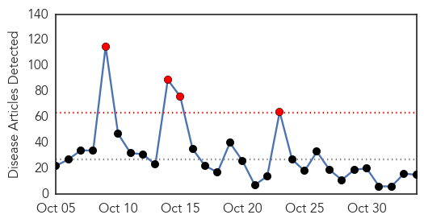
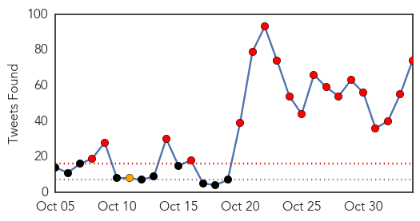
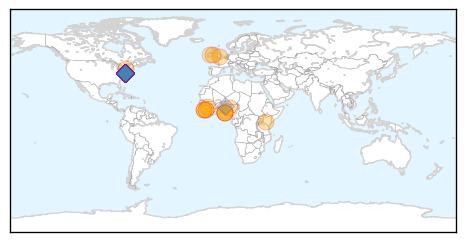
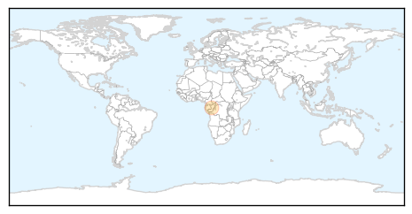

Ebola
30-Day Web Trend
4 alerts, 0 warnings

30-Day Twitter Trend
22 alerts, 0 warnings

Article Locations
Article Confidences

Top Articles:
- 1.000
- Médecins Sans Frontières (MSF) International
- 0.999
- Sierra Leone set for Ebola all clear as it approaches 42 days without a fresh case
- 0.999
- Ebola countries contributing Mp3 indir video ve müzik yükle
- 0.998
- Ebola scare stigmatised African immigrants in the US
- 0.997
- How the Ebola scare stigmatized African immigrants in the US
- 0.997
- Baby joy for Nigerian Ebola survivor
- 0.980
- State should pay to replace health workers it recruits – Robinson
- 0.980
- Baby joy for Nigerian Ebola survivor
- 0.977
- State should pay to replace health workers it recruits – Robinson
- 0.968
- Building on Sierra Leone’s Health Sector-Engaging China
- 0.964
- How Sierra Leone Fought Ebola With TB Joshua’s ‘Anointing Water’
- 0.961
- Sierra Leone officials say flawed aid strategies hamper Ebola recovery efforts
- 0.897
- Ebola baby is born to healthy parents
- 0.755
- Maada Bio concludes second phase of social mobilisation
- 0.550
- 20 Facts About Nigeria’s Health Sector
Top Tweets:
- 0.995
- sizzla ebola mp3 - https://t.co/d0sT71F9Lp ebola
- 0.995
- Emergency Appeal Operation Update - Ebola Virus Disease Emergency Appeals (Guinea, Liberia ... - https://t.co/yj14mbnAYj ebola
- 0.995
- Ebola: ''Le virus ne peut être éradiqué en Afrique de l’ouest'', affirme Dr Thierry Baldet, chercheur au CRDI https://t.co/7avoARwEQN
- 0.995
- Ebola PSA - https://t.co/p0gzhvAAbK ebola
- 0.993
- EBOLA research lab demands people injected LIVE EBOLA VIRUS !!!!!! RETWEET EVERYONE! https://t.co/Yn2lIma99d …
- 0.993
- EBOLA research lab demands people injected LIVE EBOLA VIRUS !!!!!! RETWEET EVERYONE! https://t.co/Yn2lIma99d …
- 0.993
- EBOLA research lab demands people injected LIVE EBOLA VIRUS !!!!!! RETWEET EVERYONE! https://t.co/Yn2lIma99d
- 0.993
- EBOLA research lab demands people injected LIVE EBOLA VIRUS !!!!!! RETWEET EVERYONE! https://t.co/Yn2lIma99d …
- 0.993
- EBOLA research lab demands people injected LIVE EBOLA VIRUS !!!!!! RETWEET EVERYONE! https://t.co/Yn2lIma99d …
- 0.992
- CDC report details Nigeria's effective Ebola response during 2014 epidemic - https://t.co/YDmJWrqWBP ebola
- 0.991
- News Outlets Examine Ebola's Impact In West Africa; Sierra Leone Expected To Be Declared Ebola ... - https://t.co/FXnDYJivbe ebola
- 0.989
- 5893 Suspected Ebola Cases Declared Negative - https://t.co/ca3ppiGAHn ebola
- 0.988
- Metallic poisoning, not Ebola killed UNICAL student–FG - https://t.co/1WGf3RLyoH ebola
- 0.987
- Volunteering to take on the Ebola virus - https://t.co/zwHq6snfXo ebola
- 0.986
- West Africa Continues Fighting Ebola - https://t.co/pbPDCpDBzy ebola
- 0.986
- Metallic poisoning, not Ebola killed UNICAL student–FG - The Punch https://t.co/3XGUFW0oxO ebola EVD
- 0.986
- Early hospitalizations critical for Ebola patients - https://t.co/ASUpC2skDn ebola
- 0.985
- TB Joshua's 'anointing water' reportedly curing Ebola in Sierra Leone - DailyPost Nigeria https://t.co/FNy1GTh4me ebola EVD
- 0.984
- TB Joshua's 'anointing Water' Reportedly Curing Ebola In Sierra Leone - https://t.co/E7FN8FuDhh ebola
- 0.982
- snoey's shop of ebola - https://t.co/fxJvlpt07d ebola
- 0.981
- O VÍRUS EBOLA! - PLAGUE INC - https://t.co/ITmOjKVoWM ebola
- 0.981
- Effectiveness of Ring Vaccination as Control Strategy for Ebola Virus Disease - https://t.co/S90u6dMWHQ ebola
- 0.978
- 'First Vote of Confidence After Ebola' - https://t.co/irSNOgiQvk ebola
- 0.976
- EBOLA research lab demands people to be injected with LIVE EBOLA VIRUS !! RETWEET EVERYONE https://t.co/Yn2lIma99d
- 0.976
- EBOLA research lab demands people to be injected with LIVE EBOLA VIRUS !! RETWEET EVERYONE https://t.co/Yn2lIma99d
- 0.976
- EBOLA research lab demands people to be injected with LIVE EBOLA VIRUS !! RETWEET EVERYONE https://t.co/Yn2lIma99d
- 0.976
- EBOLA research lab demands people to be injected with LIVE EBOLA VIRUS !! RETWEET EVERYONE https://t.co/Yn2lIma99d
- 0.976
- EBOLA research lab demands people to be injected with LIVE EBOLA VIRUS !! RETWEET EVERYONE https://t.co/Yn2lIma99d
- 0.976
- EBOLA research lab demands people to be injected with LIVE EBOLA VIRUS !! RETWEET EVERYONE https://t.co/Yn2lIma99d
- 0.976
- EBOLA research lab demands people to be injected with LIVE EBOLA VIRUS !! RETWEET EVERYONE https://t.co/Yn2lIma99d
- 0.976
- EBOLA research lab demands people to be injected with LIVE EBOLA VIRUS !! RETWEET EVERYONE https://t.co/Yn2lIma99d
- 0.976
- EBOLA research lab demands people to be injected with LIVE EBOLA VIRUS !! RETWEET EVERYONE https://t.co/Yn2lIma99d
- 0.976
- EBOLA research lab demands people to be injected with LIVE EBOLA VIRUS !! RETWEET EVERYONE https://t.co/Yn2lIma99d
- 0.976
- EBOLA research lab demands people to be injected with LIVE EBOLA VIRUS !! RETWEET EVERYONE https://t.co/Yn2lIma99d
- 0.976
- EBOLA research lab demands people to be injected with LIVE EBOLA VIRUS !! RETWEET EVERYONE https://t.co/Yn2lIma99d
- 0.975
- Whit people act racist. Ebola Starbucks slaveowners smh - https://t.co/7hHzYWBy1d ebola
- 0.975
- Sierra Leone officials say flawed aid strategies hamper Ebola recovery efforts - https://t.co/REf5wjtWav ebola
- 0.975
- IS TB Joshua's Holy Water Truly Curing Ebola In Sierra Leone? - https://t.co/j9010KhDj0 ebola
- 0.967
- Ebola's Immune Escape - https://t.co/PDRHGvFMeU ebola
- 0.966
- Ebola news: Genomic analysis confirms Ebola can be sexually transmitted - https://t.co/6EFxpoVRtR ebola
- 0.964
- CIDRAP: Analysis suggests Liberia Ebola cases higher than thought - https://t.co/wHmOIFzxsD ebola
- 0.962
- Ebola crisis update - 2 November 2015 - https://t.co/PuHjIupQT2 ebola
- 0.961
- RT: Just had a presentation from the mortician who removed the Ebola fatality in Dallas. Ebola: Not Even Once, y'all.
- 0.958
- Indirect costs associated with deaths from the Ebola virus disease in West Africa https://t.co/uiTjs1casr
- 0.954
- Read: How Nigeria beat the Ebola virus in three months https://t.co/k3bH5exVFU Africaagainstebola
- 0.947
- Guinea: Newborn tests positive for Ebola despite healthy parents - https://t.co/q9yH1UfRsa ebola
- 0.943
- Ebola Virus Disease Complicated by Late-Onset Encephalitis and Polyarthritis, SierraLeone https://t.co/np59IVnlQE
- 0.942
- West Dorset doctors help fight against Ebola - https://t.co/bMmcMaeRII ebola
- 0.937
- Sierra Leone set for Ebola all clear as it approaches 42 days without a fresh case - https://t.co/7SGeUKCMI6 ebola
- 0.937
- RCS Supports 12 Ebola Survivors - https://t.co/1J7ch5jVzw ebola
Showing top 50 tweets...
Hemmorhagic Fever
30-Day Web Trend
1 alerts, 0 warnings
30-Day Twitter Trend
1 alerts, 0 warnings

Article Locations
Article Confidences

Top Articles:
Top Tweets:
-
No tweets found for Nov 03, 2015